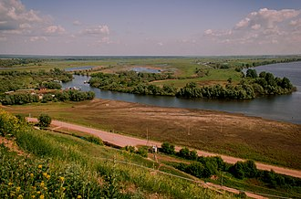

административно-территориальная единица и муниципальное образование (муниципальный район) в составе Республики Татарстан Российской Федерации. Находится на севе25-востоке республики. Административный центр — город Елабуга, расположен в 215 км от Казани и 26 км — от Набережных Челнов
Археологические исследования показывают, что Елабужское городище возникло на месте впадения реки Тоймы в Каму во времена Волжской Булгарии.
В 1236 году эти земли стали частью Золотой Орды. В 1780 году в результате административной реформы село получило статус города и название Елабуга, на тот момент он входил в состав одноимённого уезда Вятского наместничества. С марта 1921 года город был в состав Елабужского, а впоследствии — Челнинского кантонов ТАССР. Елабужский район был впервые образован 10 августа 1930 года из города Елабуги и Елабужской, Костенеевской и Черкасовской волостей Челнинского кантона. В XX веке границы района неоднократно менялись[7][5]. В районе расположена ОЭЗ «Алабуга» — самая большая и успешная особая экономическая зона промышленно-производственного типа в России. Площадка была открыта в 2006 году для развития региональной экономики и привлечения инвестиций и на 2020 год насчитывает 57 компаний-резидентов (33 — действующих). В 2020-м объём инвестиций резидентов в региональную экономику составил около 175 млрд рублей
